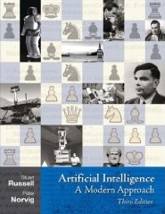

Einführung in die Künstliche Intelligenz - WS 10/11
Neuigkeiten
Im WS 2011/12 wird die Vorlesung Einführung in die Künstliche Intelligenz nicht stattfinden, es wird jedoch eine Prüfungsmöglichkeit geben. In diesem Zusammenhang weisen wir auch auf die E-learning Vorlesung Introduction to Artificial Intelligence der Stanford University hin. Sie können den "Basic Track" als Prüfungsvorbereitung nützen, der "Advanced Track" wird in diesem Semester von Prof. Fürnkranz auch direkt als Prüfungsleistung angerechnet.
Zeit und Ort
| Tag | Zeit | Raum |
|---|---|---|
| Mittwoch |
09:50-11:30 | S202/C205 |
| Mittwoch |
14:25-16:05 | S202/C110 |
Beginn: 20.10.2010
Die Veranstaltung besteht aus einer 3-stündigen Vorlesung und einer 1-stündigen Übung. Praktisch wird das so gehandhabt, dass an dem Vormittags-Termin immer Vorlesungen stattfinden. An dem Nachmittags-Termin werden sich Vorlesungen und Übungen wöchentlich abwechseln.
Forum
Für diese Vorlesung existiert auch ein Forum.
Klausur
Die Klausur findet am 16.03.2011 zwischen 15:30 - 17:30 Uhr im Raum S202|C205 und Raum S311|08 statt. Die Raumaufteilung entnehmen Sie bitte den News. Reine Bearbeitungszeit werden 90 min sein. Die Anmeldung zur Klausur erfolgt über TUCaN. Der Anmeldungszeitraum beginnt am 15.12.10 und endet am 14.01.11.
Sie dürfen ein von Ihnen selbst handbeschriebenes (vorn + hinten) DIN-A4-Blatt zur Klausur sowie ein gebundenes Wörterbuch mitbringen. Alle anderen Unterlagen, insbesondere elektronische Hilfsmittel (Taschenrechner, Handy, elektronisches Wörterbuch, etc.) sind nicht erlaubt.
Alte Klausuren mit Musterlösung (ohne Gewähr): WS 09/10, SS 09, WS 07/08, SS 07
Anrechnung
Für Diplom-Studenten Informatik ist diese Vorlesung für den Bereich 3 (Anwendungsorientierte Informatik) anrechenbar.
Inhalt
Die Künstliche Intelligenz (KI) beschäftigt sich mit Algorithmen zur Lösung von Problemen, von denen man gemeinhin annimmt, dass deren Lösung Intelligenz erfordert. Orientierte man sich in den Anfangstagen der Wissenschaft primär an psychologischen Erkenntnissen über das menschliche Denken, hat sich das Gebiet seither zunehmend dahingehend entwickelt, dass in den Problemlösungsansätzen versucht wird, die Stärken des Computers auszunutzen. Im Zuge dieser Vorlesung werden wir einen kurzen Überblick über die zentralen Themen dieser Kernwissenschaft der Informatik geben, insbesondere in die Themen Suche, Planen, Lernen und Schließen. Die historischen und philosophischen Grundlagen werden ebenfalls behandelt.
Voraussichtlicher Stoffplan
(Kapitelangaben beziehen sich auf die 3. Auflage des Textbuchs, Pointer für die 2. Auflage finden Sie in früheren Semestern.)
- Grundlagen
- Einführung, Geschichte der AI (RN chapter 1; last update 20.10.)
- Intelligente Agenten (RN chapter 2; last update 26.10.)
- Suche
- Uninformierte Suche (RN chapters 3.1 - 3.4; last update 26.10.)
- Heuristische Suche (RN chapters 3.5, 3.6)
- Lokale Suche (RN chapter 4; last update 10.11.)
- Constraint Satisfaction Problems (RN chapter 6; last update 9.2.)
- Spiele: Suche mit Gegnern (RN chapter 5, last update 7.12.)
- Planning
- Planen im Zustandsraum (RN chapter 10, last update 8.12.)
- Planen im Planraum (RN chapter 11, last update 8.12.)
- Decisions under Uncertainty
- Unsicherheit und Wahrscheinlichkeiten (RN chapter 13; last update 11.1.)
- Bayesian Networks 1 (RN chapter 14.1-14.3; last update 11.1.)
- Bayesian Networks 2 (RN chapter 14.4-14.6; last update 20.1.)
- Machine Learning
- Neural Networks (RN chapters 18.1,18.2,18.7; last update 25.1.)
- Reinforcement Learning (RN chapter 21; last update 3.2.)
- Philosophische Grundlagen
- Philosophische Grundlagen (RN chapter 26)
Übungen
Voraussichtliche Übungstermine
- 1. Übung - 03.11
- 2. Übung - 17.11
- 3. Übung - 01.12
- 4. Übung - 15.12
- 5. Übung - 19.01
- 6. Übung - 02.02
- 7. Übung - 16.02
- 1. Übungsblatt: Agenten + Uninformierte Suche (update 03.11) - Beispiellösung
- 2. Übungsblatt: Informierte und Lokale Suche + CSP - Beispiellösung
- 3. Übungsblatt: Spiele (update 01.12) - Beispiellösung
- 4. Übungsblatt: Planen (update 13.12) - Beispiellösung
- 5. Übungsblatt: Bayes'sche Netze - Beispiellösung
- 6. Übungsblatt: Neuronale Netze - Beispiellösung
- 7. Übungsblatt: Reinforcement Learning - Beispiellösung
Textbuch
Die Vorlesung folgt weitgehend dem Buch
Deutsche Ausgabe:
|
 |  |

 +49 6151 16-21811
+49 6151 16-21811 +49 6151 16-
+49 6151 16-

 Drucken
Drucken Impressum
Impressum Sitemap
Sitemap Suche
Suche